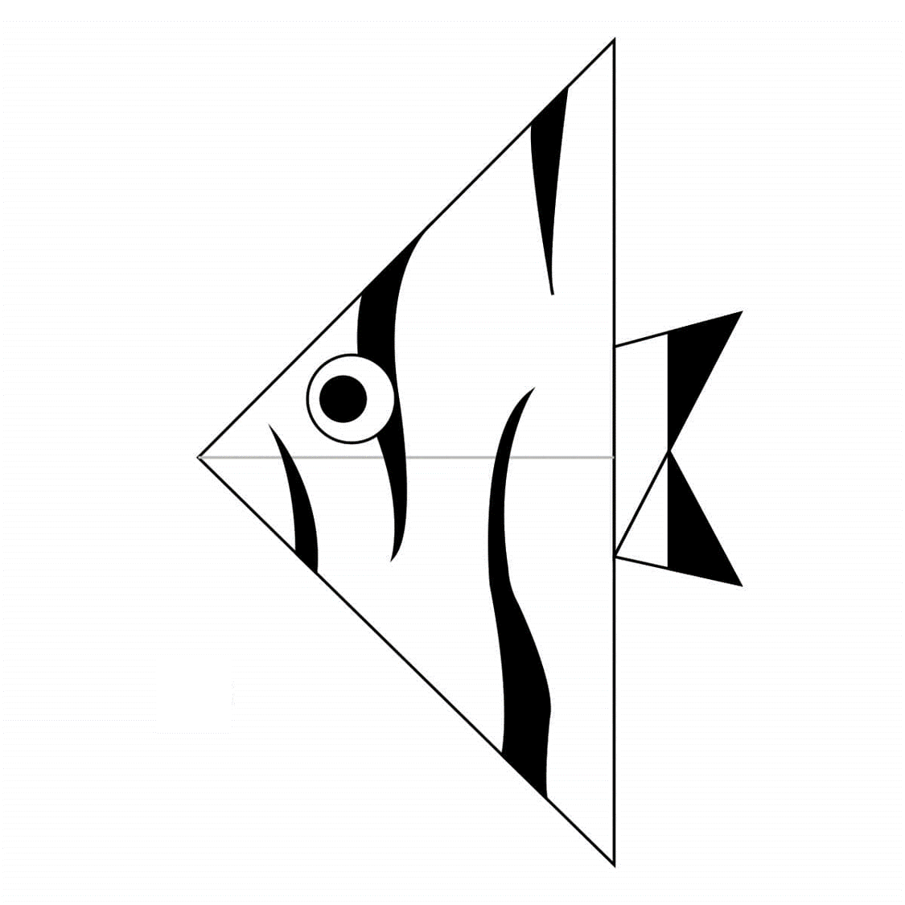

ORIGAMI DESIGNS
About Me
Follow Me
Click the images to look at the step by step instructions OR Click at the suitable title to get the videos!!
LION
Interesting Facts About Lions
- The lion has forever been a symbol of strength, power and ferocity.
- A lion’s roar can be heard from as far as 5 miles away.
- A lion’s heels don’t touch the ground when it walks.
ANGEL FISH

Interesting Facts About Angelfishes
- Freshwater Angelfish Are Members of the Cichlid Family.
- Angelfishes Are Omnivores.
- Domestic Angelfish ccme in almost every color of the rainbow
BUTTERFLY

Interesting Facts About Butterflies
- Butterflies often live just a few weeks.
- Butterflies have transparent wings.
- Butterflies live on a liquid diet.
GOLD FISH

Interesting Facts About Gold Fishes
- Goldfish actually see more colors than humans.
- Goldfish are music experts.
- If you keep a goldfish in the dark it will turn white.
CHAMELEON

Interesting Facts About Chameleons
- Chameleons are reptiles that are a part of iguana sub-order.
- Changing skin color is an important part of communication among chameleons.
- Most chameleons have a prehensile tail that they use to wrap around tree branches.
PIGEONS

Interesting Facts About Pigeons
- Pigeons are incredibly complex and intelligent animals.
- Pigeons are renowned for their outstanding navigation.
- Pigeons have excellent hearing abilities.
CAMELS

Interesting Facts About Camels
- Camels have furry ears.
- Camels can move easily across the sand because of its specially designed feets.
- When they find water, they drink it as much as possible.
PANDA

Interesting Facts About Pandas
- Pandas have so many fans because they look cute.
- Pandas have carnivorous teeth, but they eat bamboo and fruit.
- Pandas are "lazy" — eating and sleeping make their day.
FOX

Interesting Facts About Foxes
- Foxes live in underground dens.
- Foxes can make 40 different sounds and have impeccable hearing.
- Foxes have whiskers on their legs and face, which help them to navigate..
CICADA

Interesting Facts About Flying Cicadas
- Cicadas are like tiny violins, as their body is similar to that of a violin or a guitar.
- Cicadas are underground builders
- Cicadas have one of the longest insect lifespans.
SQUIRREL

Interesting Facts About Flying Squirrels
- Squirrels can find food buried beneath a foot of snow.
- Squirrels are acrobatic, intelligent, and adaptable.
- They get bulky to stay warm during the winter.